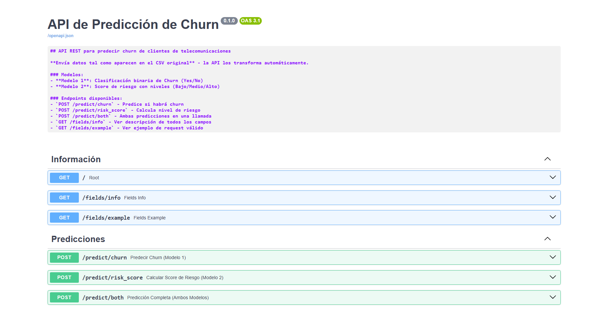

API REST desarrollada para que empresas de telecomunicaciones puedan predecir si un cliente va a abandonar el servicio (churn). Recibe los parámetros del cliente y devuelve la probabilidad de abandono usando redes neuronales entrenadas con datos reales.
La API recibe los datos del cliente (contrato, consumo, tiempo como cliente, etc.) en el mismo formato del CSV original y los transforma automáticamente. Internamente pasa los datos por dos modelos de redes neuronales: el primero responde si habrá churn (Sí/No) y el segundo calcula el nivel de riesgo (Bajo, Medio o Alto).
Toda la documentación está disponible en la interfaz Swagger UI generada automáticamente por FastAPI. El diseño de la API sigue el estándar OpenAPI 3.1.